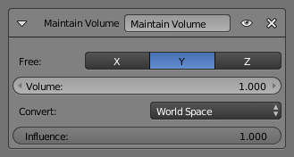

Maintain Volume Constraint¶
The Maintain Volume constraint limits the volume of a mesh or a bone to a given ratio of its original volume.
Options¶

Maintain Volume Constraint.
- Free
The free-scaling axis of the object.
X, Y, Z
- Volume
- The bone's rest volume.
- Space
- This constraint allows you to choose in which space to evaluate its owner's transform properties.